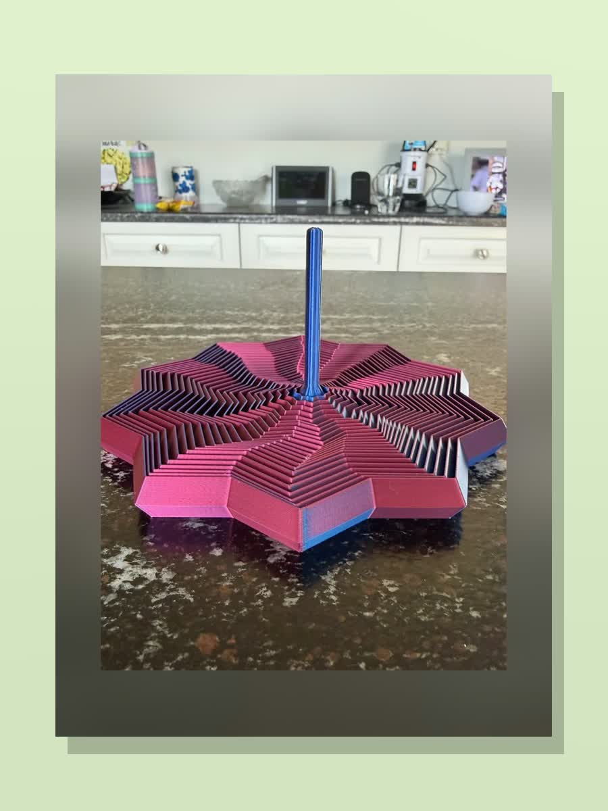

Collection page
Mitten Makes makes 3D printed fidget toys that feel giftable, playful, and easy to keep nearby. From layered star fidgets to articulated sea creatures, these Michigan-made pieces are handmade to order in Metro Detroit for kids, desk toy fans, and anyone who likes something satisfying to hold.

Buyer-intent searches around fidget toys are strong because people usually already know the kind of item they want. For Mitten Makes, that makes this one of the better places to focus: the products are gift-friendly, easy to explain, and already part of the shop.
These are especially good for birthdays, party bags, desk drops, classroom extras, stocking stuffers, and everyday little gifts that still feel personal because they are handmade and made to order.
If you are shopping for a school thank-you or classroom-friendly gift, the 3D printed teacher gifts guide is the next best page. If you are after something more specific than the current shop lineup, custom-request pages for an articulated slug or articulating axolotl are a good place to start.